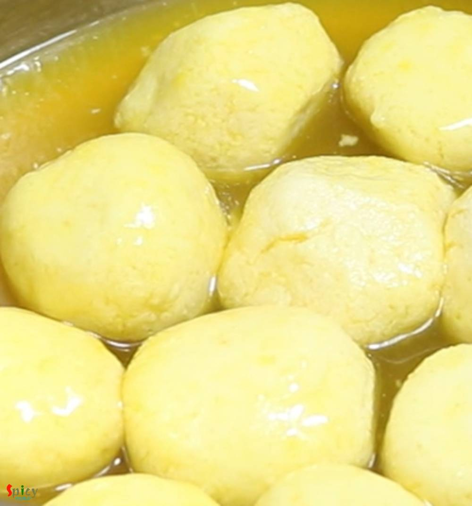

Simple and Easy Recipes
Mango Rasgulla / Aam Roshogolla
© 2016 Spicy World, Published on: May 7, 2019
Mango Rasgullas are summer delight to us. The recipe is very simple and easy. You just have to incorporate mango flavor in the rasgullas and sugar syrup. The taste of these Mango Rasgullas are out of the world. Serve then warm or chilled. Do give it a try and let me know how it turned out for you.

Ingredients
- 2 liters of full fat milk.
- 1/4th cup of vinegar or lemon juice.
- 1 Teaspoon of semolina or sooji.
- Puree of 1 medium sized ripe mango.
- 2 cups of sugar.
- 4 cups of water.
- Few drops of mango essence (if you have it).
- 2 green cardamom.


Steps
Heat the milk in a saucepan. Keep stirring in every 2 minutes.
When the milk starts boiling, add vinegar or lemon juice. Mix well and turn off the heat.
After few minutes you will see the paneer.
Strain it in a cotton cloth lined strainer.
Rinse the paneer with cold water and then sqeeze the cloth tightly to remove excess water.
Do not make the paneer very dry.
Now take the paneer out in a flat surface.
Gently mash it with the back of your palm for 3-4 minutes.
When the paneer willbecome smooth, add semolina and 2 - 3 Teaspoons mango puree.
Mix well for 1-2 minutes.
Cover it with a bowl and let it rest for 10-15 minutes.
In the meantime, add 2 cups of sugar in 4 cups of water. Use a big, open vessel for syrup.
Mix well and add 2 green cardamom, 2-3 Tablespoons of mango puree and 2-3 drops of mango essence (if you have). Cook on medium flame.
Make small balls out of the paneer mixture.
Boil the syrup for 2-3 minutes then add the Paneer balls.
Cover the pan and cook for 10-12 minutes on medium flame.
The balls will become double in size, flip them over gently and cook for another 10 minutes.
Take all the rasgullas out from the syrup.
On high flame cook the syrup until it becomes thick.
Add 1/4 th cup of mango puree and cook for another 3-4 minutes.
Then add all of the rasgullas in the thick syrup. Be very careful because rasgullas may break.
Let them rest for 4-5 hours or overnight.
Your mango rasgulla is ready to serve.
Serve them warm or chilled.
")